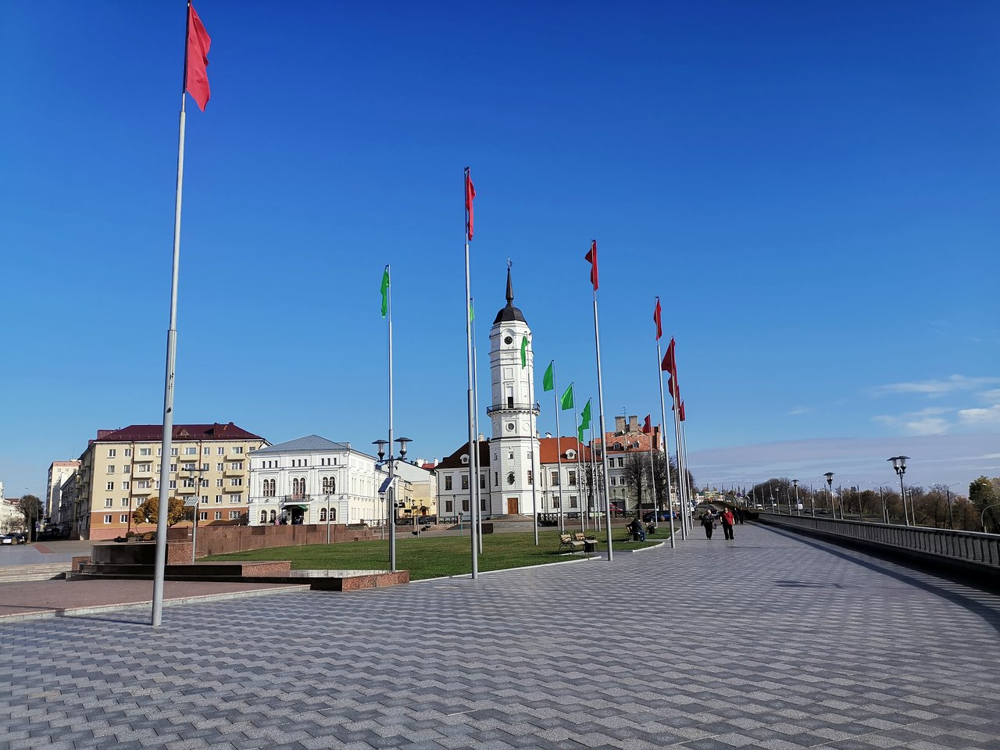
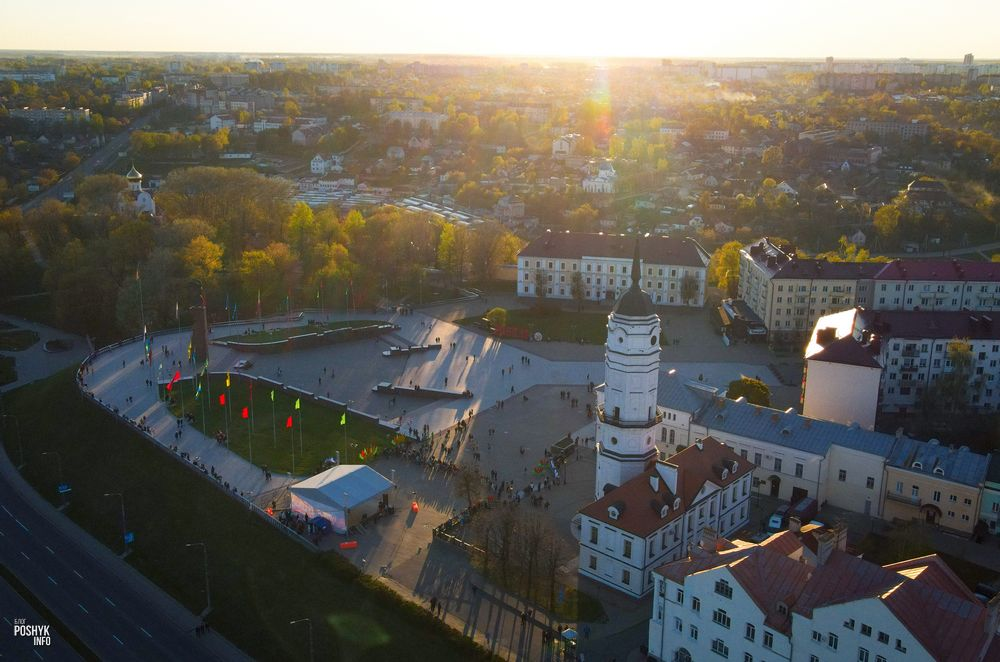

.
Площадь Славы

Площадь Славы — городская площадь Могилёва, одна из главных площадей
города, его исторический общественно-административный центр.Площадь
возникла в 1-й половине XVI века на высоком холме у слияния рек Дубровенки
и Днепра, между замком и Нагорский (Нагорным) посадом как Торговая
площадь. Имела форму неправильного многоугольника (в 1604 году занимала
территорию площадью более 2 га). На ней располагались 26 рядов лавок. От
площади радиально шли две главные улицы — Шкловская (ныне Первомайская
улица) и Ветряная (ныне Ленинская улица), которые вместе с другими улицами
и дорогами на Вильно, Быхов и Мстиславль формировали радиальную систему
планировки города.

В 1578 году, через год после получения городом грамоты на магдебургское
право, в Могилёве началось возведение городской ратуши. После
присоединения в 1772 году Могилёва к России Торговая площадь получила
название Губернаторской. Новый её облик разрабатывали известные русские
архитекторы Н. А. Львов и В. П. Стасов. Полукругом на ней располагались
здание нижнего суда, врачебной управы и архива (в 1883 году по проекту
архитектора Н. П. Высоцкого[1] реконструировано под окружной суд), домов
губернатора, вице-губернатора и губернского правления (не сохранились).
Часть площади, непосредственно примыкавшая к замку, оставалась
незастроенной (в 1928—1932 годах на месте замка создан городской парк). Во
второй половине XIX века рядом с ратушей было построено здание городской
управы.